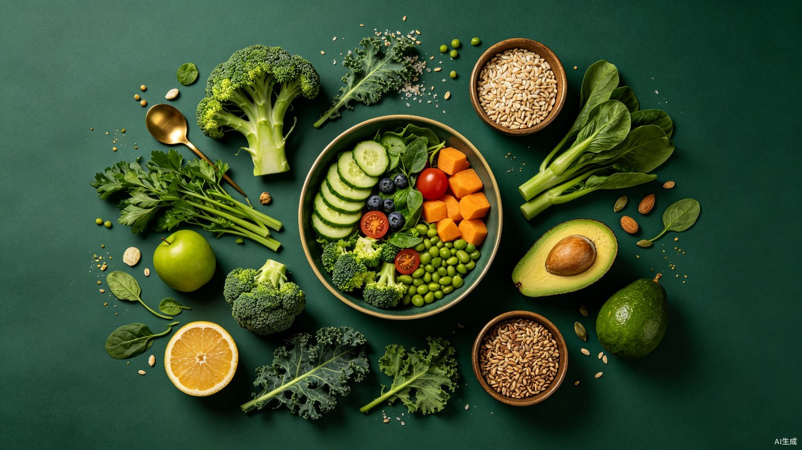

AI 饮食健康助手
拍照 3 秒
知道能不能吃
热量 · 钾 · 钠 · 磷 智能分析
覆盖 6 种饮食模式，精准适配

智能分析中...
演示模式
AI 拍照识别
拍照/相册识别食物营养
饮食记录
今日每餐摄入明细
营养仪表盘
热量与电解质可视化
个性食谱
三餐智能搭配推荐
食物营养库
查询常见食物营养数据
我的档案
身体数据与饮食模式
今日概览
加载中…
AI 拍照营养分析
正在连接识别服务...
免费本地 AI 识别模型
拍照识别在你的设备本地运行，首次会自动下载约 150MB 模型。建议先点击下载，避免第一次分析久等。
选择单位与份数自动换算克数，也可手动修改
饮食记录
营养仪表盘
宏量营养素供能占比
关键指标 vs 上限
近7天热量趋势
绿色虚线为您的每日目标热量
个性化食谱推荐
根据当前的「」生成
食物营养库
| 食物 | 热量 | 钾 | 钠 | 磷 | 风险 |
|---|
我的饮食档案
用于计算基础代谢率（BMR）和每日热量目标（TDEE）
热量目标已根据身体数据自动计算，其他指标可自行调整